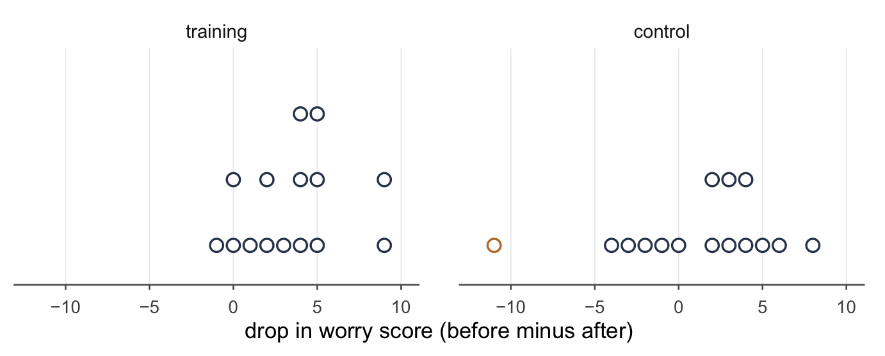
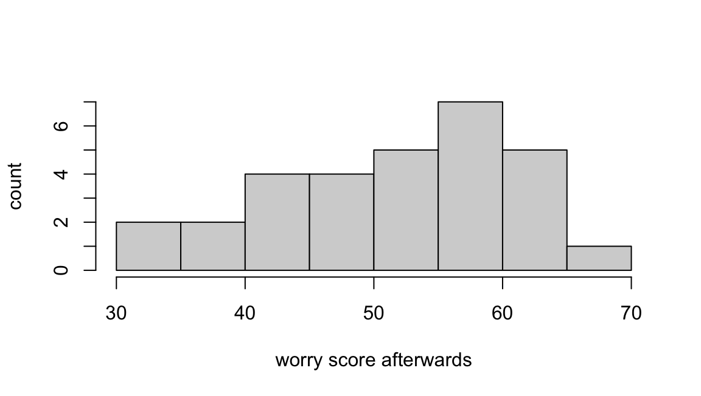

which test for which question — and all the weeks mixed together
At the end of the winter there were seven little coats hanging at the entrance to the tree, one for every kind of weather, and the bat hung beside them and could not work it out.
“One that fits all weathers,” he said, “there must be one.”
The dormouse, who had not worried about a thing all winter, woke up and looked not at the coats but outside.
“Look at the weather first,” she said.
Outside, a thin rain was falling, the first of the spring.
They went on watching it together, one just awake, the other awake all winter.
What you learn this week
choosing the test for a research question: what do you measure, and who are you comparing with whom?
the seven tests side by side: when, what you calculate, and how in R
why two questions that look alike need a different test
all the tests in R on one dataset
a big exam block, with all the weeks mixed together
Back to the question
Seven weeks ago this practice book started with one question: is that difference in the population too, or could you just as well have drawn these people by chance? That question hasn’t changed. What changed is the coat: one mean, two means, categories, with and without the bell (the normal distribution).
In an exam, the calculating is rarely the problem. The problem comes before it. You read a research question, there are two variables in it and a few numbers, and you know: this needs a test. Only which one? This is the week in which you learn to choose. Not by learning seven stories by heart, but with two questions: what do you measure, and who are you comparing with whom? The rest of the story around a study makes no difference to the choice.
One table, seven tests
What you measure is the row. Who you compare with whom is the column. Where they cross is your test.
Which test? The row is what you measure, the column who you compare with whom
you measure
one group against a fixed number
two groups, different people
the same people, measured twice
a category (nominal)
—
χ²-test (also with more than two groups)
—
a rank order (ordinal)
—
Wilcoxon rank-sum test
Wilcoxon signed-rank test
a number (interval or ratio)
known: z-test unknown, only : t-test
bell OK: independent t-test bell not OK: Wilcoxon rank-sum test
bell OK: paired t-test bell not OK: Wilcoxon signed-rank test
A dash means: for that combination you don’t learn a test in these seven weeks.
In the number row, each cell asks one more question. With one group: do you know ? With two groups and with the same people: is the bell OK (in an exam: the assumption of normality)? How you decide that comes further down, under With a number.
NotePrefer to go step by step? The decision path
The same seven tests, but as three questions one after the other, from left to right.
Every branch ends in one test. With one group the last question is whether you know ; with two groups and with paired measurements, whether the bell is OK; with χ², whether the expected frequencies are not too small.
Where the path looks at it differently from the table:
A rank order and a number start in the same box. With two groups and with the same people, a rank order ends up, at the last question, under bell not OK, and so at a rank test.
With one group that doesn’t work: there the path asks about , and that question only exists for a number. A rank order with one group is a dash in the table.
When you count, the second column says two categorical variables: the division into groups is your second variable there. That is why the table puts the χ²-test under two groups, different people.
The row: what do you measure?
Look at the outcome. It is one of three kinds, and the three are themselves in order: with each next one you know a little more about your scores. Such a kind is called a level of measurement; in brackets, each time, is what that level is called.
A category (nominal) — yes or no, a degree programme, a living situation. All you know is that the boxes differ from each other. So you count: how many people are in each box?
A rank order (ordinal) — four smileys (‘really bad’, ‘bad’, ‘good’, ‘really good’), or ‘poor, fair, good, very good’. Boxes again, but now the order is fixed: put them on a number line and ‘bad’ always comes before ‘good’. Exactly where, you don’t know: from ‘bad’ to ‘good’ isn’t necessarily as far as from ‘good’ to ‘really good’. A mean pretends all the steps are the same height, so a mean is not something you calculate here. So you rank: higher or lower, not how much higher.
A number with fixed distances (interval or ratio), also called numerical — a score, a time, an age. Now you also know how far: from 20 to 30 minutes is just as far as from 30 to 40. So you calculate: a mean, a difference.
If you count, you have two categorical variables: your outcome, and usually the group someone is in (training or control, or three degree programmes). Those groups are made up of different people. That is why the χ²-test for independence sits in the column two groups, different people, even with more than two groups.
The χ²-test compares what you count in each box with what you would expect if the two variables had nothing to do with each other. It doesn’t need the bell, only enough people per box: the expected frequencies mustn’t be too small. That is week 4 (Probabilities and tests for categorical variables).
You can also count a rank order in boxes (that is why week 4 calls it categorical too), but then you throw the order away. A rank test keeps it.
Watch out for numbers that are a code. If it says ‘1 = at home, 2 = in student housing, 3 = other’, that is a category. A 3 isn’t more ‘living’ than a 1. A mean living situation of 1.8 means nothing. If it says ‘1 = poor, 2 = fair, 3 = good’, it is a rank order: the digits give the order, not the distance.
The column: who are you comparing with whom?
There are three possibilities: the three columns.
One group against a fixed number. You have one sample and a number to set it against: the mean in the general population, a norm, an old value. These are the one-sample tests from week 2 (Hypothesis tests for one mean), so only for a number: you don’t take the mean of a rank order.
Two groups with different people in them. Training versus control, smokers versus non-smokers. Whoever is in one group isn’t in the other: the samples are independent.
The same people, measured twice. Before and after, morning and evening. The samples are paired. That also goes for pairs that belong together, such as the two halves of a pair of twins or of a couple.
Two groups, independent or paired, are both week 3 (Hypothesis tests for two means and confidence intervals). If you are torn between the two, ask this question: can you link each score to exactly one other score? Yes: paired. No: independent.
Your data file gives it away too. If the two measurements sit side by side on one row — a column before and a column after — it is paired. If there is a column that says which group someone is in, and one column with the outcome, it is independent.
With paired measurements you work out the difference for each person. Then you have one set of difference scores, and you test that against 0. So a paired test is really a test for one mean: the mean difference. Only, the of such difference scores is in no test manual anywhere. That is why with paired measurements you don’t ask about , but whether the bell is OK.
With a number: do you know σx, and is the bell OK?
With one group the question is: do you know the standard deviation of the population ()? It is sometimes in the manual of a questionnaire. If you know it, the z-test. If you don’t, and you estimate it with the standard deviation of your sample (), the t-test, with n − 1 degrees of freedom. How big your group is doesn’t decide it here: even with a hundred people it is the t-test if you don’t know .
With two groups and with paired measurements the question is: is the bell OK? In an exam that is called the assumption of normality.
The t-tests use a bell-shaped sampling distribution. That is allowed if the scores in the population are roughly normally distributed; with paired measurements, it is about the difference scores.
Note the word population. No sample is exactly normally distributed, and that isn’t the question either. The question is whether your scores could come from a roughly normally distributed population. You check that with your eyes: a histogram, a boxplot or a dot plot, and the mean next to the median.

Figure 1: The drop in worry score per person, on the left in the training group, on the right in the control group. One dot is one person. On the left the dots lie close together; on the right one lies far away, at −11.
The bell is not OK if:
your outcome is a rank order: the distances between the steps aren’t fixed;
your groups are small and the scores are clearly skewed, or there is a big outlier in them.
How big is big enough? There is no fixed number for that. There is a direction: with a handful of people per group it has to look neat; with dozens per group the bell is less fussy, because then the sampling distribution of the mean becomes bell-shaped by itself, even if the scores are skewed. That is the central limit theorem from week 2.
In between you sometimes have doubts, as on the right in Figure 1: 15 people and one big outlier. In doubt, do both. If the t-test and the rank test give the same decision, your conclusion doesn’t hang on the bell. Do say which one you take first, and why.
If an exercise says nothing about the shape of the scores, the bell is OK.
If the bell isn’t OK, you take a rank test: the Wilcoxon rank-sum test with two independent groups, the Wilcoxon signed-rank test with paired measurements. They first put the scores in order (with paired measurements: the differences) and calculate with the ranks. An outlier there is simply ‘the highest’, however far away it lies. That is week 6 (Assumptions and alternative tests), and there a rank test is also called a non-parametric test.
These are the names you’ll meet in an exam: the rank-sum test and the signed-rank test. In JASP the rank-sum test is called Mann-Whitney.
NoteIf you want to go further — one group without the bell
The t-test for one group leans on the bell too. Still, the table has no rank test for one group against a fixed number. There is one: the signed-rank test can also set the scores of one group against a fixed number, instead of against a second measurement. In this practice book you only use it for paired measurements. So with one group you only check whether there is anything odd in your scores, and you say so.
The seven in a row
When to use which test
test
outcome
who with whom
condition
in R
z-test for one mean
number
one group against a fixed number
known
by hand, pnorm()
t-test for one mean
number
one group against a fixed number
unknown
t.test(x, mu = 50)
independent t-test (Welch)
number
two groups, different people
bell OK
t.test(y ~ group)
paired t-test
number
the same people, measured twice
bell OK (for the difference scores)
t.test(x1, x2, paired = TRUE)
Wilcoxon rank-sum test
rank order or number
two groups, different people
bell not OK, or a rank order
wilcox.test(y ~ group)
Wilcoxon signed-rank test
rank order or number
the same people, measured twice
bell not OK, or a rank order
wilcox.test(x1, x2, paired = TRUE)
χ²-test for independence
category
two categorical variables
expected frequencies not too small
chisq.test(table(a, b))
And what you calculate for each test. The formulas are those of the weeks they belong to; here they stand side by side, so you see how little they differ.
What you calculate
test
test statistic
degrees of freedom
effect size
z-test, one mean
none
t-test, one mean
independent t-test
by hand the smaller of and ; R calculates it exactly
d, and
paired t-test
( pairs)
d, and
Wilcoxon rank-sum test
W: the rank sum of one group, converted into a z
none
, N = everyone
Wilcoxon signed-rank test
T⁺: the sum of the ranks of the positive differences, converted into a z
none
, n = pairs (without the zeros)
χ²-test
(rows − 1)(columns − 1)
φ or Cramér’s V
The letters in this table:
is the value from , such as the 50 of the worry questionnaire;
is the mean difference, the standard deviation of the difference scores;
O is what you count, the observed frequency; E what you expect, the expected frequency.
How you calculate and read the effect sizes is in week 5 (Effect sizes and power); the r of the rank tests in week 6.
NoteFormulas — the z for the rank tests
With a rank test, by hand, you convert the rank sum into a z, using the mean and the standard deviation that rank sum would have if were true. You need this for a calculation like exam question 24.
For the rank-sum test, with the group whose rank sum W you take:
For the signed-rank test, with n the number of pairs whose difference isn’t zero (a difference of zero is left out):
By hand, without a continuity correction (if R uses one, the output says with continuity correction). How you assign the ranks and what you do with tied scores is in week 6.
What goes with every test
The six steps of week 1 stay, whichever test you choose. What differs per test is in steps 2 and 3: which sampling distribution, and which test statistic. On top of that come three things you didn’t have yet in week 1.
The six steps, and what comes on top
step from week 1
what you write down for every test
1. hypotheses
and , two-tailed, even if the researcher expects a direction; and α (.05)
2. sampling distribution
which one: z, t with how many degrees of freedom, χ², or the ranks
3. test statistic
the number from your sample: z, t, χ², W or T⁺
4. p-value
the p from R, next to α; or the test statistic next to a boundary such as 1.96
5. statistical conclusion
reject or not, and which
6. conclusion in context
the answer to the research question, in plain words
on top: the interval
which values your data still allow (week 3)
on top: the effect size
how big the difference is (week 5)
on top: a figure
a bar chart with χ², a boxplot per group with two groups, a histogram of the difference scores with paired measurements
TipAnd the permutation test?
It isn’t in the table, because you don’t carry it out by hand. You do need to know the idea, and you already know it. Shuffle the group labels, work out the difference between the groups, and do that very many times. Every shuffled difference is a dot: that is what the difference looks like when the group doesn’t matter. Then count how many dots lie at least as far from 0 as your real difference.
That is exactly what you did in week 1 with the cards, only here the dots are made by shuffling instead of by imaginary samples.
One dataset, four questions
You know the practice dataset sleepstudy from week 1: 30 first-year students who sleep poorly. Half of them got sleep training, the other half didn’t. For everyone there is a worry score before and after. The questionnaire is made so that the mean in the general population is 50 and the standard deviation 10.
The first six rows of sleepstudy
id
group
age
worry_before
worry_after
1
training
19
54
51
2
control
24
49
45
3
training
19
48
47
4
training
26
54
55
5
control
34
61
58
6
control
21
54
56
Do you see the two shapes of the data file? worry_before and worry_after sit side by side on one row: that is paired. The column group splits the people in two: that is independent.
Four questions to the same table. They sound like family, and each one asks for a different test.
NoteResearch question A — Do poor sleepers worry differently from the general population?
Which test? The number row (a worry score), the column one group against a fixed number (50), and is known (10): the z-test for one mean.
Hypotheses. : μ = 50; : μ ≠ 50, with μ the mean worry score of poor sleepers, before the training.
By hand. The 30 worry scores before have a mean of 54.17.
Decision. 2.28 lies beyond 1.96: reject the null hypothesis that poor sleepers score 50 on average. R adds p = .022.
Conclusion. Poor sleepers worry more than the general population on average, z = 2.28, p = .022.
Had you not known , you would have taken the t-test with = 9.31: t(29) = 2.45, p = .021. Same decision.
NoteResearch question B — Does worrying go down in those who got the training?
Which test? The number row (the worry score), the column the same people, measured twice, and the bell is OK (see below): the paired t-test.
Hypotheses. Work out the drop for each person: before minus after. : ; : , with the mean drop in the population of poor sleepers who get the training.
By hand. The worry scores of the 15 people in the training group drop by = 3.47 points on average, with = 2.97.
with df = 15 − 1 = 14.
Decision. R gives p < .001. Reject the null hypothesis that the mean drop is 0.
Conclusion. In the training group, worrying goes down, t(14) = 4.52, p < .001.
Is the bell OK here? Look at the left half of Figure 1. The drops in the training group run from −1 (one person’s worry score went up by one point) to 9, with no outlier, and the mean (3.47) and the median (4) lie close together. The signed-rank test gives the same answer: p < .001.
So does the training work? No, this test doesn’t say that. Worrying can go down without training too: with time, because the exam is over, because you fill in a questionnaire differently the second time. To know whether the training does anything, you have to compare the drop with the drop in the control group. That is a different question.
NoteResearch question C — Does worrying go down more with training than without?
Which test? The number row (the drop), the column two groups, different people. Is the bell OK? In doubt (see below), so both: the independent t-test, and the rank-sum test next to it.
Look at what happened. By working out the drop for each person, everyone now has only one number. The before–after link is used up; what is left are two groups with different people.
Hypotheses. : ; : , with μ the mean drop in the population, with and without training.
By hand.
The drop in worry score per group
n
mean drop
training
15
3.47
2.97
control
15
1.07
4.76
Work out the denominator in pieces, one per line:
By hand, for the degrees of freedom you take the lower bound from week 3, the smaller of and : df = 14.
Decision. With 14 degrees of freedom, p = .12. R itself works out the Welch degrees of freedom exactly, 23.49, and arrives at p = .11. On scrap paper you calculate with 14; in a report you copy what R gives. The p shifts a little, the decision doesn’t: both times above .05, so do not reject. You do not reject the null hypothesis that the drop is equally large on average with and without training.
And the rank-sum test? R gives p = .18: here too, do not reject. This time the null hypothesis is that the drops with and without training lie at the same level.
Conclusion. In this sample, worrying goes down by 2.40 points more on average with training, but that difference between the groups is not significant, t(23.49) = 1.66, p = .11. The rank-sum test gives the same decision.
Why both? The control group has one outlier: someone’s worry score went up by 11 points, the orange dot in Figure 1. With 15 people per group that is a borderline case. The t-test comes first here, because it is one outlier and the rest of the control group lies neatly; the rank-sum test is the check. They give the same decision, so the conclusion doesn’t hang on the bell, and neither of them is wrong. Had they differed, you would have put the rank-sum test first: the outlier doesn’t bother it.
WarningSignificant in one group is not a difference between the groups
Research question B was significant, C was not. That is no contradiction. B asks whether worrying goes down in the training group; C asks whether it goes down more there than without training. Only C answers the question “does the training work?”, and the answer is: with these 30 people you can’t show it. A difference between the groups may well be there — not significant is not the same as equal.
You can see it in Figure 1 too. On the left, almost all the dots lie to the right of 0: in the training group, worrying goes down. But the dots on the left and on the right largely overlap.
NoteResearch question D — After the study, are low worriers more common in the training group?
Which test? The category row, the column two groups, different people: the χ²-test for independence. Because here the worry score afterwards is first chopped into three groups of ten: low (47 or lower), middle (48 to 56) and high (57 or higher). Then you count: the worry group becomes a category, and you let go of the order low–middle–high. Group and worry group are your two categorical variables.
Hypotheses. : group and worry group are independent in the population; : they are related.
By hand.
Group and worry group afterwards, counted
low
middle
high
total
training
5
6
4
15
control
5
4
6
15
total
10
10
10
30
Expected in each box: row total times column total, divided by the grand total. Here that is the same everywhere: .
with df = (2 − 1)(3 − 1) = 2.
Decision. R gives p = .67, above .05, so do not reject. You do not reject the null hypothesis that group and worry group are independent.
Conclusion. After the study, the worry groups are not distributed significantly differently in the training and the control group, χ²(2, N = 30) = 0.80, p = .67.
The χ²-test for research question D is correct, but the chopping costs you two things.
First, the order. For χ², low, middle and high are three separate boxes: put them in a different order, high, low, middle, and exactly the same χ² comes out (0.80). The χ²-test doesn’t see that high lies above middle. A rank test does: read low, middle and high as a rank order, and with two groups it becomes the rank-sum test.
And within a box: someone who scores 47 and someone who scores 33 are both in ‘low’, as if they were equal. If you have the number itself, a test on the number is almost always sharper.
NoteCheck in R — the four questions
How you type this in yourself is below, in In R: all the tests on one dataset. This fold-out only shows that R finds the same.
# A. z-test: R has no function for it, so by hand in Rn <-nrow(sleepstudy)z <- (mean(sleepstudy$worry_before) -50) / (10/sqrt(n))z
[1] 2.282177
2*pnorm(-abs(z))
[1] 0.02247887
training <- sleepstudy[sleepstudy$group =="training", ]# B. paired t-test in the training groupt.test(training$worry_before, training$worry_after, paired =TRUE)
Paired t-test
data: training$worry_before and training$worry_after
t = 4.5163, df = 14, p-value = 0.0004839
alternative hypothesis: true mean difference is not equal to 0
95 percent confidence interval:
1.820333 5.113000
sample estimates:
mean difference
3.466667
sleepstudy$worry_drop <- sleepstudy$worry_before - sleepstudy$worry_after# C. independent t-test on the drop, and the rank-sum test next to itt.test(worry_drop ~ group, data = sleepstudy)
Welch Two Sample t-test
data: worry_drop by group
t = -1.6568, df = 23.486, p-value = 0.1109
alternative hypothesis: true difference in means between group control and group training is not equal to 0
95 percent confidence interval:
-5.3932115 0.5932115
sample estimates:
mean in group control mean in group training
1.066667 3.466667
wilcox.test(worry_drop ~ group, data = sleepstudy)
Wilcoxon rank sum exact test
data: worry_drop by group
W = 80, p-value = 0.1813
alternative hypothesis: true location shift is not equal to 0
R puts the groups in alphabetical order, ‘control’ before ‘training’, and calculates control minus training: that is why there is a minus sign in front of the t. Why the W here is 80 and not the rank sum is explained below, in the fold-out If you want to go further — three more choices R makes.
# D. worry group afterwards, and the chi-squared testsleepstudy$worry_group <-cut(sleepstudy$worry_after,breaks =c(-Inf, 47, 56, Inf),labels =c("low", "middle", "high"))counts <-table(sleepstudy$group, sleepstudy$worry_group)counts
This week you do nothing new in R. You put everything you can already do in R side by side: one line for each test. Load sleepstudy as in week 1, and add one column, the drop (worry_drop):
## One group against a fixed number ----# z-test (sigma_x known): by hand, and pnorm() for the pn <-nrow(sleepstudy)z <- (mean(sleepstudy$worry_before) -50) / (10/sqrt(n))2*pnorm(-abs(z))# t-test (sigma_x unknown)t.test(sleepstudy$worry_before, mu =50)## Two groups, different people ----# bell OK: Welcht.test(worry_drop ~ group, data = sleepstudy)# bell not OK: rank-sum testwilcox.test(worry_drop ~ group, data = sleepstudy)## The same people, twice ----# bell OK: paired t-testt.test(training$worry_before, training$worry_after, paired =TRUE)# bell not OK: signed-rank testwilcox.test(training$worry_before, training$worry_after, paired =TRUE)## Two categorical variables ----# first chop the worry score afterwards into three groupssleepstudy$worry_group <-cut(sleepstudy$worry_after,breaks =c(-Inf, 47, 56, Inf),labels =c("low", "middle", "high"))chisq.test(table(sleepstudy$group, sleepstudy$worry_group))
See the pattern? A tilde ~ means “by group”: on the left the outcome, on the right the grouping variable. Two columns with a comma between them and paired = TRUE means: the same people. And t.test() becomes wilcox.test() when the bell isn’t OK. That’s all there is to it.
WarningWhat R quietly chooses for you
R does three things without asking. They are in the output, though.
t.test() with two groups is Welch. That is why there are degrees of freedom with decimals (23.49), and not the smaller of and that you take by hand.
Groups in alphabetical order. R calculates control minus training. So a minus sign in the output only says something about that order.
Without paired = TRUE it isn’t paired. Type t.test(training$worry_before, training$worry_after) and forget paired = TRUE, and R calculates an independent test without a murmur, as if before and after came from different people. You get an answer, only to the wrong question.
NoteIf you want to go further — three more choices R makes
You don’t need this to choose a test. It is handy, though, when you put your own numbers next to R’s.
The W of wilcox.test() is not the rank sum. R subtracts from it, with the group R takes first (alphabetically: control). For research question C the rank sum of the control group is 200, and R reports W = 200 − 120 = 80. That doesn’t change the p-value.
wilcox.test() decides for itself how it calculates. With small groups an exact p, with large groups an approximation with a small correction. By hand you use the approximation without the correction, so your p may differ in the second decimal. Your version of R counts too: since R 4.6, wilcox.test() also calculates exactly when there are tied scores, and an older R may give a slightly different p.
chisq.test() on a two-by-two table uses a correction by default (Yates’s). With a table like the one in research question D, two by three, it doesn’t.
Four traps when choosing
Paired or independent? The classic. In an exam question, two lists of numbers look the same. Ask the linking question: does each score belong with exactly one other score? Twenty people you test in the morning and in the evening are twenty pairs, not two groups of twenty. In your data file they then sit side by side on one row.
Chopping a number into boxes (that is called discretising). You can, as in research question D, and sometimes it is what the question asks. But you throw information away. If you have the number, use the number.
Significant here, not significant there. That one group changes significantly and the other doesn’t says nothing about the difference in change between the groups. There is a test of its own for that (research question C).
A direction in the question. “Are students more motivated?” sounds like a direction, but in this practice book you still test two-tailed. That the researcher expects one side doesn’t change the test; at most it changes what they hope.
Practice
NoteExercise 7.1 — Which test, which figure?
For each question, give the test (or the two tests) you can use, a descriptive measure that goes with it, and a figure.
The relationship (association) between two categorical variables.
The difference in a numerical variable between two independent groups.
The difference between two paired measurements of a numerical variable.
The mean of one numerical variable, against a fixed number.
When do you choose a rank test instead of a t-test?
CautionAnswer 7.1
The χ²-test for independence. A contingency table with row percentages, and a bar chart with the groups side by side. Effect size: φ or Cramér’s V.
The independent t-test (Welch), or the rank-sum test if the bell isn’t OK. For each group the mean and the standard deviation (with the rank-sum test: the median), and a boxplot per group.
The paired t-test, or the signed-rank test if the bell isn’t OK. The mean difference and the standard deviation of the difference scores, and a histogram or boxplot of the difference scores.
The z-test if you know , otherwise the t-test. The mean and the standard deviation, and a histogram or boxplot with a line at the fixed number.
When the outcome is a rank order (ordinal), or when the groups are small and the scores are clearly skewed or have a big outlier. Then the assumption of normality is violated: you can’t assume that the scores come from a roughly normally distributed population.
NoteExercise 7.2 — One detail makes the difference
Five pairs. The two situations in a pair look alike, but each asks for a different test. For each situation, choose one of the seven tests, and say which detail tipped the balance.
1z-test for one mean · 2t-test for one mean · 3 χ²-test for independence · 4 independent t-test · 5 paired t-test · 6 rank-sum test · 7 signed-rank test
Pair 1
According to its manual, a stress questionnaire has a mean of 20 and a standard deviation of 6 in the general population. You give it to fifty nurses and want to know whether they score differently on average.
The same questionnaire and the same question, but the manual only gives the mean of 20. In your group of fifty nurses the standard deviation is 6.
Pair 2
In thirty couples you measure, for both partners, how satisfied they are with how the housework is divided, on a scale from 0 to 100. You want to know whether the partner who does most of the housework is more satisfied, or less, than the other.
The same question, but now you measure thirty people who do the most at home and thirty people who do the least at home. None of them forms a couple with anyone else in the study.
Pair 3
Of forty students with a part-time job and forty without, you want to know: do you sleep badly, yes or no?
For those forty with and forty without a part-time job, you want to know: how many hours do you sleep per night?
Pair 4
Twelve children watch a cartoon, before and after a short explanation. You measure how long they sit still, in seconds. The differences between before and after lie neatly around the middle, with no outliers.
The same twelve children pick one of four smileys before and after the explanation: really bad, bad, good, really good.
Pair 5
In fourteen people with coffee and fourteen without, you measure a reaction time. The times are skewed, with a few very slow outliers.
The same study, but with three hundred people per group. The times are just as skewed.
CautionAnswer 7.2
Pair 1. a: 1, the z-test. b: 2, the t-test. The detail: whose is the 6? In a it comes from the manual: that is , the spread in the population. In b it comes from your own group: that is , an estimate. In a you assume that the from the manual holds for nurses too; that is how an exercise means it when it gives .
Pair 2. a: 5, the paired t-test. b: 4, the independent t-test. The detail: does each score belong with exactly one other score? In a couple it does, with the partner’s, even though they are two people. In b nobody belongs with anybody.
Pair 3. a: 3, the χ²-test. b: 4, the independent t-test. The detail: yes or no is a category, so you count; hours are a number, so you calculate. With forty per group the bell is OK.
Pair 4. a: 5, the paired t-test. b: 7, the signed-rank test. The detail: seconds are a number with fixed distances, smileys a rank order. Twelve children is not many, but the difference scores in a lie neatly; then the bell is OK.
Pair 5. a: 6, the rank-sum test. b: 4, the independent t-test. The detail: how big the groups are. Fourteen per group, skewed and a few very slow outliers: that is no longer a borderline case like research question C (one outlier, the rest neat); the bell is not OK. Three hundred per group: so many people that the sampling distribution of the mean becomes bell-shaped anyway, so the bell is OK even with skewed scores.
NoteExercise 7.3 — Read the output
A researcher types this into R, for the control group of the sleep study:
Paired t-test
data: control$worry_before and control$worry_after
t = 0.86827, df = 14, p-value = 0.3999
alternative hypothesis: true mean difference is not equal to 0
95 percent confidence interval:
-1.568199 3.701532
sample estimates:
mean difference
1.066667
Which test is this?
What are and , in words?
Do you reject at α = .05?
The researcher writes: “In the control group, worrying did not change.” Can they write that?
CautionAnswer 7.3
The paired t-test: the same people, before and after.
: in the population of poor sleepers without training, the mean change in worry score is 0. : it is not 0.
No: p = .40, more than .05, so do not reject. You do not reject the null hypothesis that worrying stays the same on average without training.
No. Not significant is not the same as equal. What they can write: “In the control group, no significant change in worrying was found.”
NoteExercise 7.4 — In R: other questions to the same table
Use sleepstudy. For each question, first choose the test with the table from One table, seven tests, and then run it in R.
Load the data and make the column worry_drop, as above.
Do the 30 participants still worry differently from the general population (50) on average after the study? Do it with the z-test ( = 10) and with the t-test, and make a histogram to go with it.
Do the training and the control group already differ in worry score before the training?
Do c again, but now as if the bell isn’t OK.
Does worrying change in the control group? First look at the right half of Figure 1: those are exactly the difference scores of this question.
Do e with the signed-rank test as well. Why is that not an unnecessary extra here?
CautionAnswer 7.4
## b. worrying afterwards against 50 ----n <-nrow(sleepstudy)z <- (mean(sleepstudy$worry_after) -50) / (10/sqrt(n))z
[1] 1.040673
2*pnorm(-abs(z))
[1] 0.2980274
t.test(sleepstudy$worry_after, mu =50)
One Sample t-test
data: sleepstudy$worry_after
t = 1.139, df = 29, p-value = 0.264
alternative hypothesis: true mean is not equal to 50
95 percent confidence interval:
48.48844 55.31156
sample estimates:
mean of x
51.9
hist(sleepstudy$worry_after, main ="", xlab ="worry score afterwards", ylab ="count")

Figure 2: Worry scores afterwards, all 30 participants (answer 7.4b).
One group against a fixed number. The mean afterwards is 51.90. With = 10, the z-test: z = 1.04, p = .30. With , the t-test: t(29) = 1.14, p = .26. Both above .05, so do not reject the null hypothesis that the mean worry score afterwards is 50: after the study, the participants’ worrying is not significantly different from worrying in the general population. The histogram shows no outliers.
Be careful with the conclusion: before, it was significant (research question A), after, it isn’t. That does not mean that worrying has gone down significantly. Whether it goes down you ask with a paired test, and whether that is because of the training, with an independent one (research questions B and C).
## c. and d. the groups before the training ----t.test(worry_before ~ group, data = sleepstudy)
Welch Two Sample t-test
data: worry_before by group
t = -0.32817, df = 27.93, p-value = 0.7452
alternative hypothesis: true difference in means between group control and group training is not equal to 0
95 percent confidence interval:
-8.208213 5.941546
sample estimates:
mean in group control mean in group training
53.60000 54.73333
wilcox.test(worry_before ~ group, data = sleepstudy)
Wilcoxon rank sum exact test
data: worry_before by group
W = 109, p-value = 0.8942
alternative hypothesis: true location shift is not equal to 0
## e. and f. the control group, before against after ----t.test(control$worry_before, control$worry_after, paired =TRUE)
Paired t-test
data: control$worry_before and control$worry_after
t = 0.86827, df = 14, p-value = 0.3999
alternative hypothesis: true mean difference is not equal to 0
95 percent confidence interval:
-1.568199 3.701532
sample estimates:
mean difference
1.066667
Wilcoxon signed rank exact test
data: control$worry_before and control$worry_after
V = 81, p-value = 0.2399
alternative hypothesis: true location shift is not equal to 0
Independent t-test: p = .75. No significant difference in worry score between the groups before the training. That is what you hoped for, too: the groups were made by drawing lots.
Rank-sum test: p = .89. Same decision.
The same people, before and after: the paired t-test, p = .40. No significant change in the control group. But look at Figure 1: the difference scores of these 15 people have one big outlier (at −11), and that is the borderline case for whether the bell is OK.
Signed-rank test: p = .24. Same decision. Precisely because the bell is doubtful here, you add it: now you know that the conclusion doesn’t hang on that one outlier.
NoteExercise 7.5 — Research questions A to D, two ways
With the four research questions above, it always said ‘R gives p’. Now you look it up yourself, once, in the tables at the back of the Dutch edition (in Dutch), and check it with R as a calculator. In the exam you don’t have to look anything up. You do it to see that the two ways arrive at the same result. The table gives you not a number but a bracket: the two probabilities your p lies between. To decide at .05 that is enough, as long as .05 doesn’t fall between them. And you see what R hides from you: which tail, which row, and how far beyond the boundary you are.
A, the z-test:z = 2.28. In table A, look up the probability to the right of 2.28, and turn it into a two-tailed p. Then work it out in R: 2 * pnorm(-2.28).
B, the paired t-test:df = 14. Which goes with a 95% interval? Look it up in table D and compare it with qt(.975, 14). Then look up t = 4.52 in the same row: where does it fall?
C, the independent t-test (Welch):t = 1.66. Without R you take as df the smaller of and (week 3). Here the groups are the same size, so both are 14. Between which two columns of row 14 does t fall, and what does that tell you about p? Does that agree with the p R gave, at its own df of 23.49?
D, the χ²-test: χ²(2) = 0.80. Look it up in row 2 of table F. What does that tell you about p? And why is it not times two here?
CautionShort answer 7.5
The four research questions, two ways
table
where
bracket
times two?
R
decision
A
A
row 2.2, column .08
2 × .0113 = .0226
yes
.0226
reject
B
D
beyond the last column of row 14
p < .001
yes
p < .001
reject
C
D
row 14, between 1.345 and 1.761
.10 < p < .20
yes
p = .11
do not reject
D
F
row 2, before the first column
p > .25
no
p = .67
do not reject
And for B: = 2.145 (row 14, column .025); R gives 2.1448.
CautionFull worked answer 7.5 — step by step
In table A, in the part for positive z, row 2.2 and column .08 hold the probability .9887: the probability to the left of 2.28. To the right it is 1 − .9887 = .0113, and two-tailed 2 × .0113 = .0226. R, with the same 2.28, also gives .0226.
Research question A said p = .022, and to three decimals the table gives .023. That difference comes from rounding z. In A, R worked with the z exactly as it came out of the calculation, 2.2822; for the table you round it to two decimals. (In exercise 6.4 a difference like this came from the rounded cell in the table. Both are rounding, in a different place.) Both are below .05: reject.
Row 14, column .025: 2.145. Why .025? An interval of 95% leaves 5% over, and that is split over two tails: .025 in each tail. The bottom row of table D says so too: under .025 it says 95%. R asks it the other way round: qt() wants the probability to the left of , and that is 1 − .025 = .975. qt(.975, 14) gives 2.1448, the same to three decimals. With that you work out the interval; you do that in question 29 of the exam block.
t = 4.52 lies beyond the last column of row 14 (4.140, column .0005). So one tail is smaller than .0005, and the two tails together smaller than .001: p < .001. That is what R said too.
In row 14, 1.66 lies between 1.345 (column .10) and 1.761 (column .05). So one tail lies between .05 and .10, and two-tailed: .10 < p < .20. R gave p = .11 at its own df, and with df = 14 it was p = .12. Both inside the bracket, both above .05: do not reject.
Why the smaller df? Look in column .025: row 14 says 2.145, but row 23 (the one that goes with R’s df) only 2.069. With fewer degrees of freedom your t has to lie further out before it is significant. That is why week 3 calls the smaller df the cautious side: without R you choose the df that makes it hardest for you. If you reject then, R is sure to reject as well.
In row 2 of table F, the first column (.25) already says 2.77. Your 0.80 lies to the left of that, before the first column even: p > .25. R gave p = .67. Not times two: with χ², the column heading is already your whole p (week 4). Far above .05: do not reject.
What you saw in these four:
A bracket against a number. The table says which two probabilities p lies between; R says exactly where. To decide at .05 the bracket is enough, as long as .05 doesn’t fall inside it.
One tail or two. With z and t the table gives one tail, so times two. With χ² never.
The df picks the row. If your df isn’t in the table, like R’s 23.49, you take the next smaller df that is in the table: 23. That is not the same as the rule for Welch without R, where your df itself is the smaller of and . Both choose the cautious side.
Exam block
This is how you might meet it in an exam: multiple choice with four options, a number to fill in, or yes or no. All the weeks are mixed together, as in a real exam. Under every answer it says which week the question belongs to; at the bottom is the whole overview. All you need is your calculator and your cheat sheet. Where you need a p-value or a boundary, it is given in the question, or you use what is on your cheat sheet, such as 1.96. The exam doesn’t ask you to look anything up in a table; you did that in exercise 7.5, to check yourself.
NoteQuestion 1 — multiple choice
Thirty students fill in a stress questionnaire (0–100), once in the week before their exams and once in the week after. Which test fits?
the independent t-test
the paired t-test
the χ²-test for independence
the rank-sum test
CautionAnswer question 1
B. The same people, measured twice, and a score from 0 to 100 with thirty people: the bell is OK. A is the trap: two columns don’t make two groups. Covered in: week 3 and week 7.
NoteQuestion 2 — multiple choice
Five years ago, first-year students spent €240 a year on textbooks on average. A researcher wants to know whether first-year students now spend either more or less. In 40 first-year students they find a mean of €212. Which pair of hypotheses goes with this?
: μ = 212; : μ ≠ 212
: μ = 212; : μ < 212
: μ = 240; : μ ≠ 240
: μ = 240; : μ < 240
CautionAnswer question 2
C. The fixed number from the past goes in , and ‘either more or less’ is two-tailed. A and B put the sample mean in , but you already know that number. D takes the direction from the sample: you see 212 and then choose ‘less’, and that is exactly what isn’t allowed. Covered in: week 1.
NoteQuestion 3 — fill in
In the population, = 12. You draw samples of n = 36. How big is the standard error of the mean?
Of 200 first-year students you know whether they have a part-time job and whether they sleep badly.
Part-time job and sleep in 200 first-year students
part-time job
sleeps badly
sleeps well
total
yes
32
48
80
no
30
90
120
total
62
138
200
In this table, is sleeping badly independent of having a part-time job, and what is the probability that a random first-year student from this table has a part-time job and sleeps badly?
yes; .16
yes; .40
no; .16
no; .40
CautionAnswer question 4
C. With a part-time job, sleep badly; without one, . Those probabilities differ, so the two are not independent. The probability of a part-time job and sleeping badly is .
The trap is .40: that is the probability of sleeping badly if you have a part-time job, a conditional probability. Covered in: week 4.
NoteQuestion 5 — multiple choice
What makes the power of a test greater, if everything else stays the same?
a smaller sample
a smaller α
a larger real difference in the population
more spread in the population
CautionAnswer question 5
C. A larger real difference is easier to see. A, B and D all three work the other way: fewer people, a stricter boundary and more noise make it harder to find a real difference. Covered in: week 5.
NoteQuestion 6 — multiple choice
Two groups of students do a memory task. Group 1: = 16, = 24.5, = 4.8. Group 2: = 21, = 20.1, = 5.6. What are t and the degrees of freedom, worked out by hand?
t = 2.57; df = 35
t = 4.40; df = 15
t = 2.57; df = 15
t = 4.40; df = 35
CautionAnswer question 6
C.
The degrees of freedom: the smaller of 16 − 1 and 21 − 1, so 15. In B and D, 4.40 is only the difference between the means, not yet divided by the standard error. df = 35 () goes with the pooled test: an older version that assumes both groups spread equally. You don’t use it in this practice book. Covered in: week 3.
NoteQuestion 7 — yes or no
You do a rank-sum test. The highest score in your data is 40, but on checking it turns out it should be 400. Does the rank sum W change?
CautionAnswer question 7
No. The 40 was already the highest score, and so is 400: it keeps the same rank. That is why outliers don’t bother a rank test. They do bother a t-test: there the mean shifts a lot. Covered in: week 6.
NoteQuestion 8 — multiple choice
An IQ test has μ = 100 and = 15 in the general population. A sample of 25 children scores 106.6 on average. How big is z?
0.44
2.20
1.32
11.00
CautionAnswer question 8
B.
A divides by instead of by the standard error: that is the z-score of one child, not of a mean. C divides only by , D by instead of . Covered in: week 2.
NoteQuestion 9 — yes or no
You test two-tailed with α = .05 and find z = 2.20 in question 8. Do you reject ?
CautionAnswer question 9
Yes. 2.20 lies beyond 1.96. You reject the null hypothesis that these children score 100 on average. Covered in: week 2.
NoteQuestion 10 — multiple choice
A sleep-training programme really works: in the population, worrying goes down because of it. A researcher finds p = .21 in their sample and does not reject . What has happened?
a Type I error
a Type II error
a correct decision, because p > .05
nothing: at p = .21, is true
CautionAnswer question 10
B. The training does lower worrying, and the test missed it: a false negative. C only looks at the rule and not at reality. D is the reversal: a p doesn’t tell you whether is true. Covered in: week 1 and week 5.
NoteQuestion 11 — fill in
Take the table from question 4. How many first-year students with a part-time job who sleep badly do you expect if part-time job and sleep are independent? Give one decimal.
CautionAnswer question 11
24.8. Row total times column total, divided by the grand total:
You counted 32: more than expected. Covered in: week 4.
NoteQuestion 12 — yes or no
The 95% confidence interval for the difference between two population means, , runs from −0.40 to 3.10. Do you reject : at α = .05 (two-tailed)?
CautionAnswer question 12
No. The interval contains 0: your data still allow a difference of 0. So do not reject: you do not reject the null hypothesis that the two means are equal. Covered in: week 3.
NoteQuestion 13 — multiple choice
An independent t-test gives t(38) = 2.50. How big is η²?
.06
.14
.16
.38
CautionAnswer question 13
B.
A forgets the squares, C forgets in the denominator, and D is the square root of B: that is r, a different effect size. Covered in: week 5.
NoteQuestion 14 — multiple choice
Fifteen people with sleep problems say, before and after a month without a phone in bed, how rested they feel: poor, fair, good or very good. Which test fits?
the paired t-test
the rank-sum test
the signed-rank test
the χ²-test for independence
CautionAnswer question 14
C. The same people, measured twice: paired. And four words in order are a rank order: the bell is not OK. A is the trap if you see the pairing but miss the rank order; B if you see the rank order but miss the pairing. D is the trap if you take four words for categories: then you count boxes and lose that they are in order, and that they are the same people. Covered in: week 6 and week 7.
NoteQuestion 15 — multiple choice
You test one mean, you don’t know , and your sample is n = 20. Which distribution do you use?
the standard normal distribution (z)
the t-distribution with 20 degrees of freedom
the t-distribution with 19 degrees of freedom
the t-distribution with 18 degrees of freedom
CautionAnswer question 15
C. unknown, so t, with n − 1 = 19 degrees of freedom. n − 2 goes with none of the tests in this practice book. Covered in: week 2.
NoteQuestion 16 — multiple choice
What do you do in a permutation test for two groups?
draw a new sample from your own data each time, with replacement
shuffle the group labels each time and work out the difference again
replace the scores by their ranks
first transform the scores until they are normally distributed
CautionAnswer question 16
B. If you shuffle the labels, you see how big the difference gets when the group doesn’t matter. That is the world of , made with your own data. A is the bootstrap, C a rank test, D transforming. Covered in: week 6.
NoteQuestion 17 — multiple choice
You do a χ²-test on a contingency table with 3 rows and 4 columns. How many degrees of freedom?
A group scores 54 on average on a test whose mean in the general population is 50. The standard deviation in the group is 8. How big is Cohen’s d? Give two decimals.
CautionAnswer question 18
0.50.
The difference is half a standard deviation. Covered in: week 5.
NoteQuestion 19 — fill in
A z-test gives z = 2.10. The probability of a z of 2.10 or higher is .018. What is the two-tailed p-value?
CautionAnswer question 19
.036. The bell is symmetrical, so the other tail is just as heavy: one tail times two, 2 × .018 = .036. With a smooth, symmetrical bell that is allowed; with a dot plot you count both sides. Covered in: week 2.
NoteQuestion 20 — multiple choice
A χ²-test on degree programme and preference for morning or afternoon classes gives χ²(2) = 7.10, p = .029. Which conclusion is right (α = .05)?
Reject : degree programme and preference are related in the population.
Reject : the probability that degree programme and preference are independent is .029.
Do not reject : degree programme and preference are independent.
Do not reject : no relationship has been shown.
CautionAnswer question 20
A. .029 ≤ .05, so reject: the data fit badly with a world in which the two have nothing to do with each other. B is the reversal: p is not the probability that is true. C and D belong with a p above .05, and C then also turns ‘not rejected’ into ‘true’. Covered in: week 4 and week 1.
NoteQuestion 21 — multiple choice
Your data are skewed and you want to use a log transformation. When do you choose that transformation?
before you run the test
after you have seen which transformation gives the smallest p
only if the test without transformation is not significant
it doesn’t matter, as long as you report it
CautionAnswer question 21
A. If you choose after seeing the p, you are in effect choosing the outcome you wanted. It is the same reason you don’t choose the direction of a test after you have seen the data. Covered in: week 6.
NoteQuestion 22 — multiple choice
A researcher calculates a 95% confidence interval for μ and finds [48.2, 55.6]. Which statement is right?
95 out of 100 participants score between 48.2 and 55.6.
The sample mean lies between 48.2 and 55.6 with probability .95.
If you did this very many times, each time with a new sample, μ would lie in 95 out of 100 of the intervals made that way.
μ is 51.9, with a probability of .95.
CautionAnswer question 22
C. The interval is about μ, and the .95 belongs to the method: how often such an interval hits. A is about individual people instead of the mean. B: the sample mean always lies in the interval, right in the middle. D turns the middle into a certainty that isn’t there. Covered in: week 3.
NoteQuestion 23 — multiple choice
In a study with 4,000 participants, two groups differ significantly, p < .001, with d = 0.06. What is the best summary?
a large and important difference, because p is very small
a significant difference, but it is very small
no real difference, because d is almost 0
a Type I error, because d is almost 0
CautionAnswer question 23
B. With 4,000 people you see even a tiny difference. The p says whether there is a difference; d says how big it is. A mixes the two up. C and D suddenly turn small into zero: d says nothing of the kind. Covered in: week 5.
NoteQuestion 24 — multiple choice
A rank-sum test with two groups of 8. By hand you add up the ranks of group A: the rank sum is W = 50 (so not the W that R would report). How big is z for group A, without correction? The formulas are under The seven in a row, in the fold-out “Formulas — the z for the rank tests”.
−1.89
−1.52
−0.20
1.89
CautionAnswer question 24
A.
B forgets the + 1, in both places. C divides by the variance instead of by the standard deviation. D has the wrong sign: group A has a rank sum below what you would expect, so z is negative. Covered in: week 6.
NoteQuestion 25 — yes or no
In question 24, do you reject (two-tailed, α = .05)?
CautionAnswer question 25
No. |−1.89| is smaller than 1.96. Close, but close is not enough: do not reject. You do not reject the null hypothesis that the scores of the two groups lie at the same level in the population. Covered in: week 6.
NoteQuestion 26 — multiple choice
In the population, income is strongly skewed. You draw a sample of 100 people very many times and note the mean income each time. What does the distribution of those means look like?
just as skewed as income itself
roughly normal, and narrower than the distribution of income itself
roughly normal, and as wide as the distribution of income itself
flat: every mean occurs equally often
CautionAnswer question 26
B. That is the central limit theorem: means of large samples are roughly normally distributed, even if the individual scores are skewed. And narrower, with a standard deviation of . Covered in: week 2.
NoteQuestion 27 — multiple choice
Of 250 students from three degree programmes, you note whether they passed an exam, yes or no. You want to know whether passing is related to the degree programme. Which test fits?
the t-test for one mean
the independent t-test
the χ²-test for independence
the rank-sum test
CautionAnswer question 27
C. The outcome is yes or no: a category, so you count. Degree programme is a category too. B is the trap: ‘comparing three groups’ sounds like a t-test, but there is nothing to average in yes or no. Besides, the independent t-test only compares two. Covered in: week 4 and week 7.
NoteQuestion 28 — multiple choice
According to its manual, a worry questionnaire has a mean of 50 in the general population; the manual gives no standard deviation. You give it to 36 night-shift workers and find a standard deviation of 9. You want to know whether night-shift workers worry differently on average. Which test fits?
the z-test, because the group is larger than 30
the z-test, because the standard deviation is known: 9
the t-test, because is unknown
the paired t-test, because you compare with 50
CautionAnswer question 28
C. The 9 comes from your own group: that is , an estimate, not . So the t-test, with 35 degrees of freedom. A is a stubborn myth: the size of your group doesn’t decide between z and t. Whether you know decides. D: comparing with a fixed number is one group, not paired. Covered in: week 2 and week 7.
NoteQuestion 29 — multiple choice
In the training group of research question B, the worry scores of n = 15 people drop by = 3.47 points on average, with = 2.97. At df = 14, = 2.145. What is the 95% confidence interval for the mean drop, , to one decimal?
[−2.9, 9.8]
[1.8, 5.1]
[2.0, 5.0]
[2.7, 4.2]
CautionAnswer question 29
B. First the standard error, then the margin, then the two limits:
To one decimal, [1.8, 5.1]. That the margin comes out at exactly 1.645 is a coincidence: it is not the for 90%. The other three are each a well-known mistake:
[2.0, 5.0] takes 1.96 instead of 2.145. That is z*, and it goes with a known . Here you only have , so t.
[2.7, 4.2] takes the standard error itself as the margin: forgotten.
[−2.9, 9.8] calculates with instead of the standard error. That is how far individual people lie apart, not how far a mean swings.
In R, as a calculator: 3.47 + c(-1, 1) * 2.145 * 2.97 / sqrt(15). And t.test() gives, for research question B, with the unrounded numbers, [1.82, 5.11]. That is the interval you put in a report, to two decimals; the one decimal is only for this question. Covered in: week 3.
NoteQuestion 30 — multiple choice
The same training group, now with the signed-rank test by hand. Of the 15 people, two have no difference between before and after. The rank sum of the pluses is = 89.5. How large is z?
−3.07
0.21
1.68
3.07
CautionAnswer question 30
D. A difference of zero goes out, so n = 15 − 2 = 13:
If you rounded the denominator to 14.3, you get 3.08: the same z, apart from the rounding. Then choose the option that is closest.
The other three are each a well-known mistake:
1.68 counts the two zeros as well, with n = 15.
0.21 divides by the variance, 204.75, instead of by the standard deviation.
−3.07 calculates with = 1.5, the rank sum of the minuses. That is the same test from the other side, with the same p. But the question gives , and that goes with a positive z.
In R, as a calculator: (89.5 - 13 * 14 / 4) / sqrt(13 * 14 * 27 / 24). Covered in: week 6.
NoteQuestion 31 — multiple choice
Research question D gave χ²(2) = 0.80, with 30 people in a contingency table of 2 rows (the group) and 3 columns (the worry group). How large is Cramér’s V?
.03
.12
.16
.80
CautionAnswer question 31
C.k is the smaller of the number of rows and the number of columns, here 2, so k − 1 = 1:
The other three are each a well-known mistake:
.03 is : the square root forgotten.
.12 takes the larger number, 3, instead of the smaller.
.80 is χ² itself, written down as V.
In R, as a calculator: sqrt(0.80 / (30 * (2 - 1))). Covered in: week 5.
![A tree diagram from left to right in four columns, headed: what do you measure, who with whom, do you know sigma-x or is the bell OK, and the test. Column 1, what do you measure: at the top categories (you count), below that a rank order or a number. After categories comes 'two categorical variables', then 'expected frequencies not too small', and then the chi-squared test for independence. After a rank order or a number column 2 splits into three: one group against a fixed number, two groups with different people, and the same people measured twice. Column 3: with one group, 'sigma-x known' leads to the z-test and 'sigma-x unknown' to the t-test for one mean; with two groups, 'bell OK' (the scores may count as roughly normally distributed) leads to the independent t-test (Welch), and 'bell not OK, or a rank order' to the Wilcoxon rank-sum test (called Mann-Whitney in JASP); with the same people, 'bell OK' leads to the paired t-test and 'bell not OK, or a rank order' to the Wilcoxon signed-rank test.](07_toetskeuze_files/figure-html/pad-1.png)